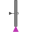

PartialTransitionPartial transition with input and output connections |
Parameters (2)
| enableTimer |
Value: false Type: Boolean Description: = true, if timer is enabled |
|---|---|
| waitTime |
Value: 0 Type: Time (s) Description: Wait time before transition fires |
Inputs (1)
| localCondition |
Type: Boolean Description: = true, if transition may fire |
|---|
Outputs (3)
| t |
Type: Time (s) Description: = actual waiting time (transition will fire when t > waitTime) |
|---|---|
| enableFire |
Type: Boolean Description: = true, if all firing conditions are true |
| fire |
Type: Boolean Description: = true, if transition fires |
Connectors (2)
| inPort |
Type: Transition_in Description: Vector of transition input connectors |
|
|---|---|---|
| outPort |
Type: Transition_out Description: Vector of transition output connectors |
Extended by (2)
|  |
Modelica.StateGraph Transition where the fire condition is set by a Boolean input signal |
|
Modelica.StateGraph Transition where the fire condition is set by a modification of variable condition |